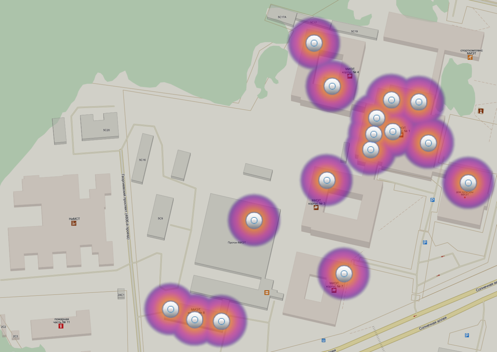

Вы подключились к открытой сети Wi-Fi MIET.
Тут вы можете узнать, как выйти в Интернет через сеть EDUROAM MIET и скачать ПО для настройки своего устройства.
Доступ в интернет через эту сеть не предоставляется.
Перейти к разделу 'Как подключиться'.
С мая 2015 года в беспроводной сети МИЭТ изменен порядок доступа к сети вуза и Интернет. Сети MIET-VIP, MIET-WPA и MIET-GUEST с доступом через прокси-сервер постепенно будут заменены на сеть eduroam.
Прокси-сервера (с персональным учетом трафика) и ограничения по портам при подключении через сеть eduroam не используются.
Eduroam (education roaming) это защищенная, доступная по всему миру сеть, разработанная для международного научно-образовательного сообщества. Eduroam предоставляет возможность беспроводного доступа в Интернет всем студентам и сотрудникам, а так же гостям из вузов-партнеров, участвующих в проекте Eduroam как в МИЭТ, так и за его пределами.
На данный момент мы производим замену старого wi-fi оборудования на современное. Количество мест, где работает eudoroam будет увеличиваться.
Карта покрытия:

Если Вы еще не сменили "пароль по умолчанию", то вам необходимо обратиться в ауд.4100 или воспользоваться страницей сменой пароля в личном кабинете users.miet.ru (Доступно только из сети МИЭТ).
Если вы не сменили пароль по умолчанию, то сеть Wi-Fi EDUROAM работать не будет.
На сайте cat.eduroam.org доступны конфигураторы для популярных платформ (Windows Vista/7/8, Mac OS, iOS, Linux).
Скачайте конфигуратор под вашу платформу на сайте https://cat.eduroam.org/?idp=1042 и запустите установщик.
В процессе работы конфигуратора вас попросят ввести свой логин и пароль.
Логин надо вводить в формате ваш_логин@miet.ru (например, u211111@miet.ru или t1000000@miet.ru).
Для автоматической настройки вашего устройства через сайт cat.eduroam.org, вам необходимо скачать eduroamCAT из Google Play.
Если вы подключены к сети miet_wifi_config, то приложение eduroamCAT вы сможете скачать только по прямой ссылке: https://cat.eduroam.org/eduroamCAT-stable.apk. Google Play через эту сеть работать не будет.
Из-за требований безопасности Android, для настройки интернета через приложение eduroamCAT вы дложны установить пароль/код/графический ключ на своем Android устройстве.
Если для вашей операционной системы есть конфигуратор, то настраивать подключение вручную не рекомендуется.
Для настройки вручную используйте следующие данные:
При настройке вручную перед подключением рекомендуется скачать и установить корневой сертификат МИЭТ.
Это позволит вашему устройству проверять сертификат сервера авторизации МИЭТ.
Если вы находитесь за пределами МИЭТ, в организации, которая также участвует в проекте eduroam, вы сможете подключиться к местной WiFi сети, используя Ваши логин@miet.ru и пароль. При этом будут доступны только базовые сервисы Интернета. Обратите внимание, что при использовании eduroam в другой организации, вы обязаны соблюдать правила пользования Интернетом этой организации. Нарушение этих правил может привести к дисциплинарным процедурам.
Для некоторых услуг, которыми вы пользовались в МИЭТ (например сервера с терминальным доступом), необходимо подключиться к VPN. Для этого следует получить установить клиент VPN с сайта vpn.miet.ru.
Перед тем, как уехать из МИЭТ: